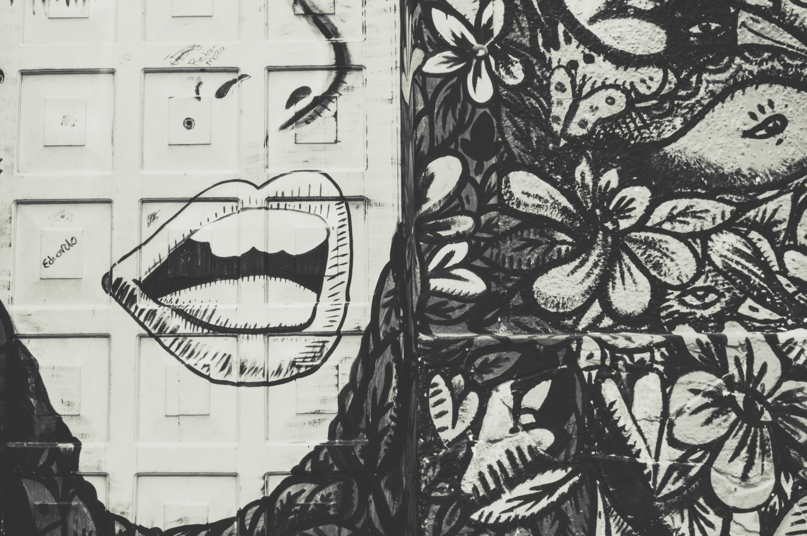
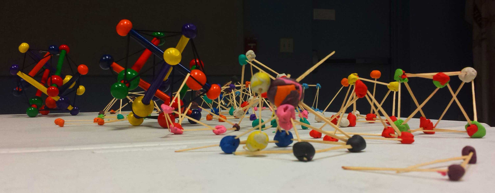
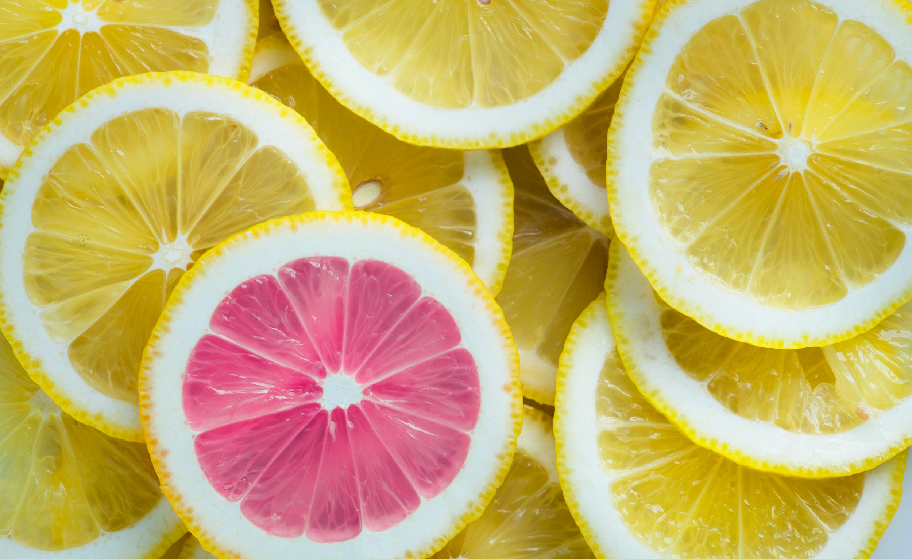

Decolonizing STEAM
A CALL TO ACTION FOR STEAM MEMBERS

An Editorial by Felicita Devlin
Growing up, I restrained myself from envisioning a STEM-based career. I tried to foster my passion for Marine Biology and Astronomy, but I felt isolated by what I saw in the classroom and in the industry. I studied hard, but my efforts were devalued. I was told to stay within a creative field, where I wouldn’t have to work twice as hard to succeed. I realized that careers within science, technology, engineering, and math are isolating spaces that don’t recognize my heritage and perceive it as primitive and underdeveloped. This was my primary reason why I chose to go to an art and design college instead.
For a long time I tried to avoid the labels of “angry social justice warrior” and being a “special snowflake.” These assumptions exclude social and political from the academic conversation. It normalizes that scientific research to be strictly objective and within a western hegemonic lens.
Over the last two years, I have served as a project chair and co-president for RISD Science, Technology, Engineering, Arts, and Mathematics, known as STEAM. STEAM, an organization a part of a national movement to include Art & Design in STEM Education. Through our programs and events, we aim to inspire a generation of creative problem solvers. We strongly believe multidisciplinary working & learning will empower teams in an increasingly connected world. However, within my own STEAM chapter and beyond, it hasn’t been an easy feat as a queer Latinx student.
Unlearning traditional academic thought does not just apply to STEM. It is necessary in order to construct our own interdisciplinary curriculum to express broader experiences and create intersectional futures. STEAM is a movement that reconstructs a traditional space that STEM took up. It has become a platform for radical discourse to act on restorative justice.We do not put enough efforts to unlearning our traditional Western narratives within the STEAM movement as well. In order for STEAM to move forward as a movement, we must put more effort into unlearning traditional Western narratives and subverting white supremacy within educational spaces.
STEAM utilizes art and design in the process of multidisciplinary critical thinking to generate new solutions. The practice of critical thinking requires us to interrogate previously narrow-minded thinking. Decolonial thinking, is integral to the critical thinking process that disrupts traditional practices to enact change. This movement encourages constant collaboration within our community and beyond, so we are able to disrupt traditional narratives. STEAM must be a new force that actually moves away from it’s deeply entrenched histories in relationship to STEM. We must use our art and design skills to challenge old narratives and build a new future by fighting for marginalized groups and making their histories visible through allyship.
Our world is still intellectually and physically colonized. Violence towards Indigenous, Black, Latinx, Muslim, Asian, refugees, immigrants, LGBTQ+, and people with disabilities globally is common yet invisible to many in our current socio-political climate. Science and art contribute to this violence and to the gentrification of communities such communities.
The word “Decolonization” often gets thrown around when talking about educational institutions and movements. However, many people ignore the original goals of “decolonization” as not just a metaphor, but a call to action to recognize the existence of the histories and cycles of violence towards Indigenous and Black bodies globally. We need to use restorative justice to validate the descendants of this violence. We need to include perspectives of Indigenous cosmology, languages, histories, and pedagogies that have historically been undermined and labeled as “uncivilized” and “primitive” by Western science. We need to validate non-European contributions to science and the arts. We need to recognize the worthiness of non-European sciences, technologies, arts, engineering, and mathematics within the scope of the academic community. This can encourage a new generation of marginalized students to be in a multidisciplinary creative and academic career.
Traditional academic research and knowledge practices originate from violent settler histories towards Indigenous and Black communities. Unlearning traditional European narratives allows us to critically deconstruct our educational and social institutions. It is a complex way to challenge our western pedagogies, and to transform our futures. We need to be open to Indigenous critiques that opens complex and difficult conversations. We need more meaningful alliances and solidarity within our communities.
As STEAM members, We must personally address the violent histories of our educational institutions. For me, that means acknowledging that Brown University and Rhode Island School of Design both exist because of economic wealth gained from a violent history of exploitation of Black and Brown bodies in the African slave trade, and stolen Indigenous land. Especially in conversations regarding gentrification through the development of the sciences and the arts.
Science-washing and Art-washing have encouraged the displacement of communities of color is disguised as “public good” and “development” in order to improve social welfare and economics for these communities. Meanwhile, the actual problems faced by the local population get ignored, such as raised rent and higher costs of living. These communities are perpetually targeted as being “underdeveloped,” but in order to benefit the elite. It’s results from the heightened development of the future is rooted in false utopian futures. Science-washing and Art-washing are current forms of gentrification that utilize the ideals of science and art to argue for reconstruction of a community. But this remains an invisible issue disguised as progress.
There is a need to be accountable of the invisibility incurred by Indigenous, Black, Asian, and Latinx communities within our American settler history of violence. This includes resettlement and enslavement from colonial settlers and the exploitation of Black and Indigenous bodies. We must actively decolonize our local, national, and global communities. We cannot allow the word decolonize to just become a passive metaphor. We need to transform and create newly inclusive spaces that have been previously and currently dominated by colonial thought. By unlearning our mainstream western narratives of success and achievement.
STEAM’s mission is to provide more efficient solutions to complex problems within the education system. To survive as a movement, we must reconstruct this mission to address the histories of our Universities in relationship to our larger communities.
We can make it possible by collaborating with students and leaders of the community and beyond. We can lead discussions and projects towards decolonial thinking and capable of visual storytelling of our community.
I recognize STEAM isn’t perfect, it’s a process. Taking account of histories of violence and oppression isn’t simple. It is a complex process of unlearning and confronting the past colonial settler history of STEM rooted in traditional thinking. Sometimes, I feel that the strict academic standpoint of STEAM misses many opportunities to transform. To decolonize is to expand one’s mind about the non-European disciplines around us and listen to non-European narratives while it also requires effort for restorative justice.
We need STEAM to become a platform to lead and start these conversations and make efforts to reach out to the communities surrounding our Universities.
We need STEAM to become a platform to enable leaders of different identities to lead to unlearn harmful thinking practices and create meaningful alliances.
We need STEAM to become a platform to take accountability of the privilege of its STEM direction and how we to grow as a movement of radical thinking and discourse.
We need STEAM to make effort towards restorative justice.
RISD to RIMOSA
STEAM Museum finds a home

By Dan Mangano
During a trip to RIMOSA, The Rhode Island Museum of Science and Art, I walked into the South Providence storefront not knowing what to expect, yet curious. How could an institution claiming to be a museum, represent STEAM’s core values while encouraging interdisciplinary thinking and a breaking of intellectual barriers? I left the place with a new understanding of what STEAM can do for a community.
Bonnie Epstein, the Executive Director of the Museum, Professor at the Rhode Island School of Design, Brown University Alum and fervent supporter of STEAM was one of the founders of the museum. She spearheaded the effort to acquire a physical space which is now located in Upper South Providence. At RISD, Epstein teaches students to integrate design with issues of environmental justice. At RIMOSA, she develops workshops for middle school to high school age kids in the Providence area.
RIMOSA, a newly located Providence museum, extends the steam effort to local middle school and high school students and Providence area adults. RIMOSA Fosters a community passionate about learning through discovery and active inquiry. At the museum, people of all ages are receiving a haptic introduction to learning by doing and making, and discovering new outcomes hands on. Many children and adults leave with a new understanding of relationships between creative thinking, problem solving and the scientific method.
Known for its appearances during Providence Waterfire festivals and classroom workshops in Providence schools, RIMOSA now operates a safe learning center with intuitive, informational and often fun workshops along with exhibits and activities for children, students and adults in the Providence area.
From teaching children the art, physics and optic science that makes a zoetrope work, to creating a rocket from alternatively sourced materials such as duct tape, students are exploring the intersection of design with science while learning creative critical thinking and problem solving.
As the mission states, "We want to help kids become creative problem solvers that can examine and understand the world around them. This mission is accomplished by encouraging the exploration of science through art, and art through science.”
Food Labs
An experimental fermented dinner party

By Raina Wellman
The colors were gorgeous, and the bubbles were adorable. This spring members of the RISD food lab set up a tasting party. The table was brimming with fermented experiments; pickled strawberries and figs, sauerkraut with cayenne, ghost pepper fermented hot sauce, fresh sourdough, and so much more. The foods, rich in good bacteria that is believed to improve digestion, boost immunity, promote a healthy weight, and more, were all prepared over the course of the semester by students interested in exploring the art of fermentation.
Over several months, the RISD food lab put on six workshops, teaching students and people of the Providence community about fermentation. Together we made pickles, kimchi, fermented hot sauce, kombucha, sourdough, sauerkraut, and other fermented experiments. It was a practice in investigating our food and our relationship with bacteria.
The RISD food lab came together quite naturally. All of us were interested in further incorporating food into our art and design practices and were excited to find a community of like-minded students. Each week, we met in the Nature Lab to discuss projects and plan workshops. In collaboration with RISD/Brown STEAM, we were able to make our series of weekly fermentation workshops public and host an end of a semester tasting event.

The RISD design education — and STEAM as well — encourages students to use their art and design practices to think outside of the box in the face of big design challenges. Food is filled with questions and serious challenges. How can food production be more sustainable and just? How will climate change affect the ways we eat? How can food-design aid health challenges like dysphagia? We began our investigation into food with fermentation. Fermentation, a culinary practice that deals with the microbiome, challenges our views on bacteria, and has incredible historical and cultural significance.
An interview that I conducted with Sandor Katzwas published in the College Hill Independent in 2016. There I wrote, “The fermentation of food is an ancient practice, the earliest record dating back to 6000 BCE in the Fertile Crescent. Today, grocery aisles are filled with fermented products—from bottled beer to kimchee. Yet fermentation is much more than the process of converting carbohydrates to alcohol. The anaerobic conditions and chemical conversions can be used to create bread, sauerkraut, yogurt, olives, cheese, and vinegar or be applied to a variety of vegetables, fruits, dairy products, grains, beans, and meat.” Katz, a well-known fermentation expert and advocate, talked to me about the importance of demystifying the fermentation process, good and bad bacteria, and his love of trying out new fermentation recipes. He emphasized that fermentation allows people to investigate their food and is a process that is incredibly safe and easy.
Katz encouraged people to think about their gut health and bacterial environments; he told me, “When we eat any kind of living fermented food we’re introducing elaborate microbial communities into our bodies. They have a complex interaction with the bacteria in our intestines; they stimulate improved immune responses that contribute to better digestion and their genetics become available to all the bacteria in our intestines. In a very literal way, they enrich the environment for the bacteria in our intestine, and they contribute to greater biodiversity.”
My conversation with Katz and other researchers on fermented foods and the microbiome helped to develop the inspiration required to put on the food lab events this spring semester. His work as a fermentation advocate is inspiring, and the world of fermentation is filled with fascinating cultural and healthful impact.
In the end I want to thank my fellow food lab members and RISD/Brown STEAM for helping to support this college dream of mine — I’ve been trying to create a fermentation dinner party for 3 years now, and it was incredible to see my dream realized and to learn so much about fermentation techniques from fellow students. The future of the food lab is wide open with possibilities, and we are excited for inevitable future collaborations with STEAM.
We are a group of students supporting each other as we investigate a subset of art and design that isn’t typically offered as a class. We are also a group of students aiming to create a community space that can facilitate conversations about class, race, culture, and the environment. We want to reinvent and investigate all the different ways that food is perceived and used, all while using it to design techniques to highlight the multi-sensory experience of eating.